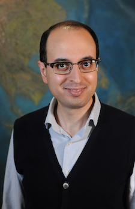

Behrooz Ferdowsi
Behrooz Ferdowsi

Welcome to my webpage! I am currently a Postdoctoral Research Associate at the Department of Geosciences, Princeton University. Previously, I was a Harry H. Hess Postdoctoral Fellow (2017-2019) at Princeton Geosciences. I am primarily working with Prof. Allan M. Rubin on constitutive laws for rock friction, also known as rate- and state-dependent friction laws. My work until nowadays has been supported by funds from the United States National Science Foundation, the United States Geological Survey, and the United States Department of Defense, the U.S. Army Research Office.
Before coming to Princeton in June 2017, I was a Postdoctoral Researcher at the University of Pennsylvania, Sediment Dynamics Laboratory (PennSeD) and a Synthesis Postdoctoral Fellow of the National Center for Earth-surface Dynamics (NCED) (February 2015 to May 2017). At PennSeD, I worked with Prof. Douglas J. Jerolmack (UPenn, Earth and Environmental Science) on bimodal sediment transport, subsurface to surface evolution of riverbeds and also granular controls of hillslope creep and geophysical landscape evolution. I received my PhD (Dr. sc.) in September 2014, from ETH Zurich (Switzerland), Department of Civil, Environmental and Geomatic Engineering. For my PhD research, I studied the influence of vibrations on the frictional behavior of sheared granular layers.
As a person whose research and academic endeavors have been adversely affected by exclusivity (because and only on ground of my national origin, I experienced a one-year-long postdoc visa delay when moving for my first postdoc to the US. I have been then subject to the US Travel Ban from January 2017, on ground of my national origin, while I was studying and doing research for my first postdoctoral appointment in the US. This situation continued until March 2020, which meant that I was prohibited by the US government from any travel including for visits, fieldworks, faculty job interviews, meetings and conferences anywhere outside the United States of America, for about three years of my academic life. Indeed, I unfortunately had to miss several excellent and exciting academic, research, and visit opportunities during this time period!), I am strongly committed to inclusivity, increasing of diversity, and broadening the participation of and advancement of under-represented groups and minoritized people in the academic and research environments.
Please send me an email at the address below, if you need an updated copy of my academic resume.

Research interests
My research activities are at the interface of Mechanics of Materials, Geophysics, Geology, and Soft and Granular Matter Physics. Until nowadays, I have worked on problems in rock friction and fault mechanics, geophysical landscape evolution, and soil and sediment transport in rivers and hillslopes, among others. I am generally interested in using a broad set of tools, for connecting observations in the area of Solid Earth Geosciences broadly, i.e. Earth's surface and subsurface processes, to their physical and chemical origins as quantitatively as possible, across the scales. The immediate applications are in prediction and modeling of geohazards (earthquakes, earthflows, and landslides, as some examples), flow and failure of geomaterials at different environmental conditions, and better understanding of the processes that shape the surface and subsurface of the Earth (and other planets) and their responses to perturbations. At some stage, this broad and important goal would require new developments in applied mathematics and applied mechanics, as well as advances in observational methods, through laboratory and field-based experiments. That is the direction I am moving toward. Some of my more specific interests include but are not limited to:
- Physics of granular media and applications of soft condensed matter phyiscs in geosciences, from lab and theory to the (geological) field: sediment transport, frictional behavior and rheology of Earth materials;
- Development of constitutive laws and Equations of State for Earth and planetary materials at the Earth's surface, near surface, and subsurface;
- Experimentally-based analytical/computational and multiscale modeling for geoscientific problems; asymptotic analysis;
- Continuum (finite elemenet method), discontinuum (discrete element method, molecular dynamics), and coupled modeling approaches;
Please see my research page for more information.
Ongoing collaborations
- My research at Princeton on the granular physics contribution to rate- and state-dependent friction of rock and glacial till is a continuation of a two-year-long research and collaboration that started in early summer 2015 with Professors David L. Goldsby and Douglas J. Jerolmack at the University of Pennsylvania, also in collaboration with Professor Chris J. Marone at the Pennsylvania State University. My initial research at the University of Pennsylvania on rate-state friction and the role of dynamic stresses was funded by a 2016 Southern California Earthquake Center (SCEC) award (#16059) to Prof. Goldsby, resulting from a SCEC proposal submitted in November 2015, and through support from Prof. Jerolmack. This collaboration resulted in two posters on granular physics of rate-state friction, presented at SCEC 2015 and 2016 Annual Meetings, and a review paper on granular origins of rate-state friction (drafted in October 2015). The collaboration with Prof. Marone on this topic continues through a collaborative NSF proposal between Prof. Marone and my current advisor Prof. Rubin at Princeton University. The very first initiation of my research on this topic started with some slide-hold-slide (this is an standard rate-state friction protocol) experiments I performed with the granular model I developed during my PhD research. I have continued research on this topic soon after I started my first postdoc at the University of Pennsylvania PennSeD and within the new collaborations I developed there. In addition to SCEC Annual Meeting 2015 and 2016, I presented results from this study at the AGU Annual Meetings (2017, 2018, 2019) and at the Gordon Research Conference on Rock Deformation 2018.
- With Professor Douglas J. Jerolmack (University of Pennsylvania), I continue to work on granular physics of creep as related to soil and sediment transport in natural environments. The first results of this project were reported in our Nature Communications (2017) and PNAS (2018) papers. My research on this topic was supported during my time at the University of Pennsylvania PennSeD by an NSF award to Prof. Jerolmack, by a synthesis postdoctoral fellowship to me from the National Center for Earth-surface Dynamics (NCED) at the University of Minnesota, and by a US Army Research Office - Army Research Laboratory award to Prof. Jerolmack. Results were also reported in numerous oral and poster presentations at international meetings, conferences, and workshops, including at the AGU Annual Meetings (2015, 2016, 2017, 2018), Engineering Mechanics Institute Conference 2019, Gordon Research Conference and Seminar on Granular Physics 2016, Northeastern Granular Materials Workshops 2015 and 2016, and several departmental seminars at US-based universities and institutions by B. Ferdowsi, Prof. Jerolmack, and collaborators, as well as at several outreach activites in Philadelphia (PA), Princeton (NJ), Amherst (MA) and other places in the US.
- With Professor Jane Willenbring (Scripps Institution of Oceanography, University of California San Diego) and Dr. Emma Harrison (Scripps Institution of Oceanography, University of California San Diego), I am working on the implications and controls of slow granular deformations for the rate of soil transport and mixing. The first results of this work were presented at the AGU Annual Meeting (2018).
- With Enrique Miguel del Castillo '19 (Princeton, now PhD student at Stanford University), I am continuing to work on the grain-scale physics of critical-taper theory and mountain-building processes.
- With Professor Jean-François Molinari (École Polytechnique Fédérale de Lausanne), Dr. Guillaume Anciaux (École Polytechnique Fédérale de Lausanne), and Manon Eugénie Voisin--Leprince (École Polytechnique Fédérale de Lausanne), I am working on coupled FEM and DEM simulations for earthquake fault mechanics and frictional problems in Earth and planetary materials.
- With Professor Francis Nimmo (University of California Santa Cruz), I am working on near-surface processes on small rocky planetary bodies (asteroids).
- With Benjamin Alessio '21 (Princeton University), I am collaborating on frictional behavior and origins of stick-slip dynamics in sheared granular layers.
- With Professor Terry E. Tullis (Brown University), Dr. Nicholas M. Beeler (US Geological Survey), and Professor Pathikrit Bhattacharya (Indian Institute of Technology Bhubaneshwar), I am collaborating on controls of state evolution in rate- and state-dependent friction of Earth materials.
Professional affiliations
- Regular member, Earth Science Women's Network (ESWN), 2019-present
- Regular member, American Physical Society (APS), 2017-present
- Regular member, Southern California Earthquake Center (SCEC), 2015-present
- Regular member, American Geophysical Union (AGU), 2015-present
News and short notes
- 12-05-2019: At the American Geophysical Union Annual Meeting 2019, I am presenting a poster on our latest findings on the granular origins of rate- and state-dependent friction on Tuesday, 10 December 2019, 13:40 - 18:00, at the Moscone South - Poster Hall. The poster ID is T23D-0500.
- 10-07-2019: Dylan B. Lee's paper on the imprint of vegetation on desert dune dynamics has now been accepted in the Geophysical Research Letters! Congratulations Dylan!
- 09-23-2019: I will give a Institute for Geophysics and Planetary Physics (IGPP) Seminar, at the Earth & Planetary Sciences Department, University of California Santa Cruz, on December 6, 2019. The seminar is organized by Dr. Stephanie Taylor, and I thank her for the invitation.
- 06-27-2019: I will give a Solid Earth Brownbag seminar at Princeton University, Department of Geosciences, on November 22, 2019.
- 06-04-2019: Enrique M. del Castillo '2019 who I had the pleasure of working with him for his senior thesis research has recieved the Princeton Institute for the Science and Technology of Materials (PRISM) Outstanding Senior Thesis Award and the Arthur F. Buddington Award of the Department of Geosciences. Enrique's senior thesis was advised by Profs. Blair Schoene and Allan M. Rubin and was titled "A Numerical and Field-data Evaluation of the Critical Taper Model for Orogenic Wedge Stability". Congratulations Enrique!
File translated from
TEX
by
TTH,
version 4.12.
On February 10, 2020, 23:09 EST